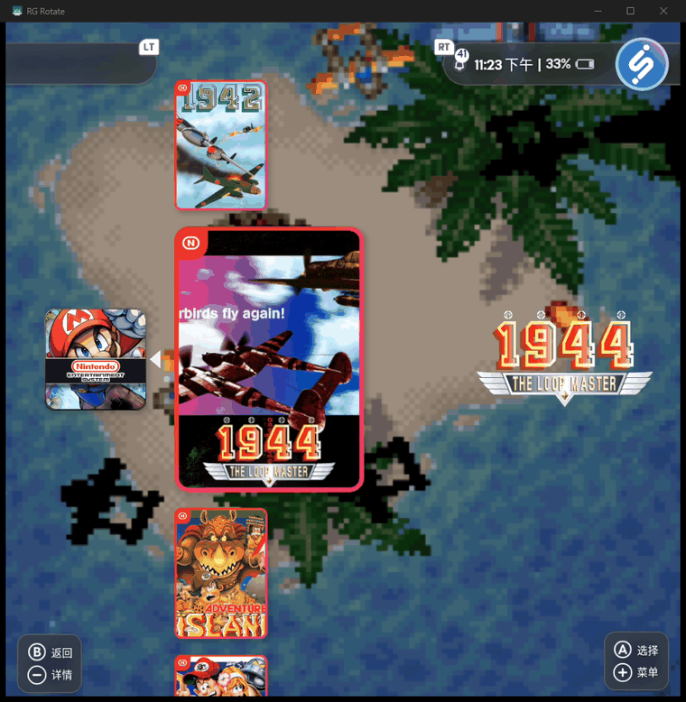
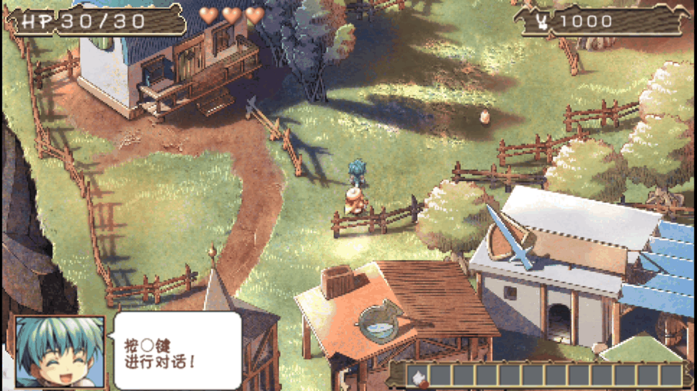
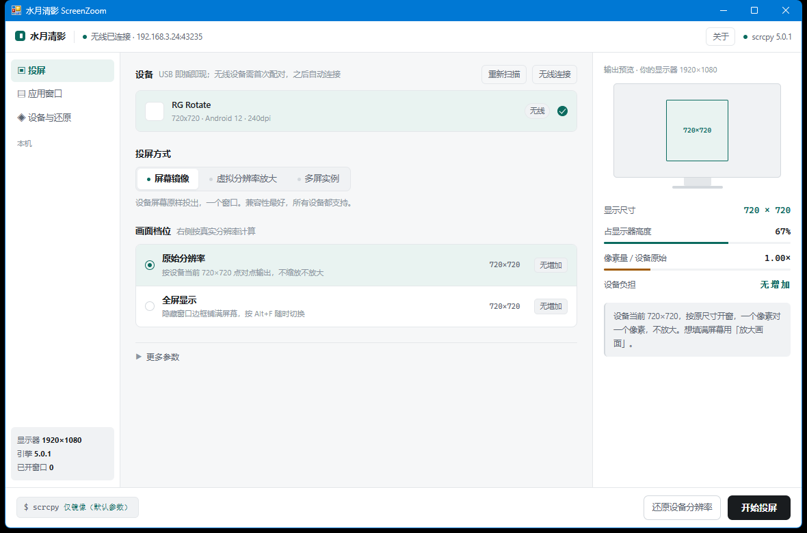
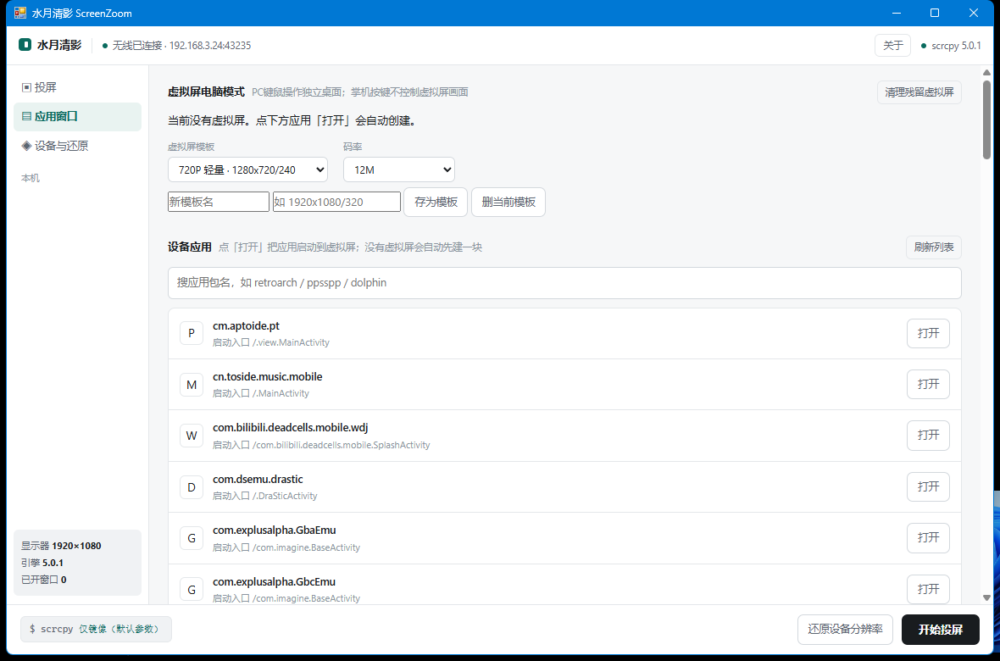

Windows 上的安卓投屏工具
把安卓设备画面
投到电脑上
掌机、手机、平板都支持，USB 或无线连接。投屏方式和画面档位在界面上选，右侧给出输出尺寸与设备负担；改过的设备参数可以还原。


投屏、多屏和无线连接
所有操作都在本机完成
- 01
- 02
- 03
- 04
- 05
屏幕镜像
把设备画面直接投到窗口，兼容性最好。
虚拟分辨率放大
设备按更高的分辨率重绘后再投出，不是把画面拉大。
虚拟屏电脑模式
每个应用一块独立虚拟屏，在电脑上并排显示。
应用直达
在程序里选中设备上的应用，直接启动到虚拟屏。
无线连接
局域网内自动发现设备，首次配对后可直接连接。
选设备和档位，右侧显示输出预览
界面截图


常见问题
收费吗？会不会偷偷上传我的东西？
免费，没有广告、内购和注册。画面只走 USB 线或你家的局域网，不经过任何服务器；程序里所有操作都在本机完成，只有「检查更新」会去读一次版本清单。
为什么我的掌机投出来只有一小块，不铺满？
掌机多是 1:1 方屏，显示器是 16:9 宽屏。按比例铺满高度就只能占屏幕宽度的一小条，这是几何限制，不是软件没做好。想真的变大要用「虚拟分辨率放大」，让设备重新画一张更大的图。
「放大画面」和直接拉伸有什么区别？
拉伸是把 720 的图硬撑大，会糊。这里的做法是先把设备的渲染分辨率调高（比如 720 → 1080），设备按新分辨率重新画一遍再投过来，字和线条是真的更细。代价是设备要多干活，发热和功耗会涨。
改过设备分辨率，程序崩了没还原怎么办？
进「设备与还原」页，那里有立即还原。它记着改动之前的原值；万一记录也丢了，还能强制恢复出厂值。
无线投屏要做什么设置？
手机上打开「开发者选项 → 无线调试」，程序里点「无线连接」，它会在局域网里找；第一次需要填一次配对码，之后打开就能直接连。手机和电脑要在同一个网络。
它和直接用 scrcpy 命令行有什么区别？
引擎就是 scrcpy，命令也是那些命令（界面底部会显示）。区别是它把分辨率、DPI、虚拟屏、还原这些容易改坏设备的细节托管了：先记原值、算好档位、超出标明代价，不用你记参数。